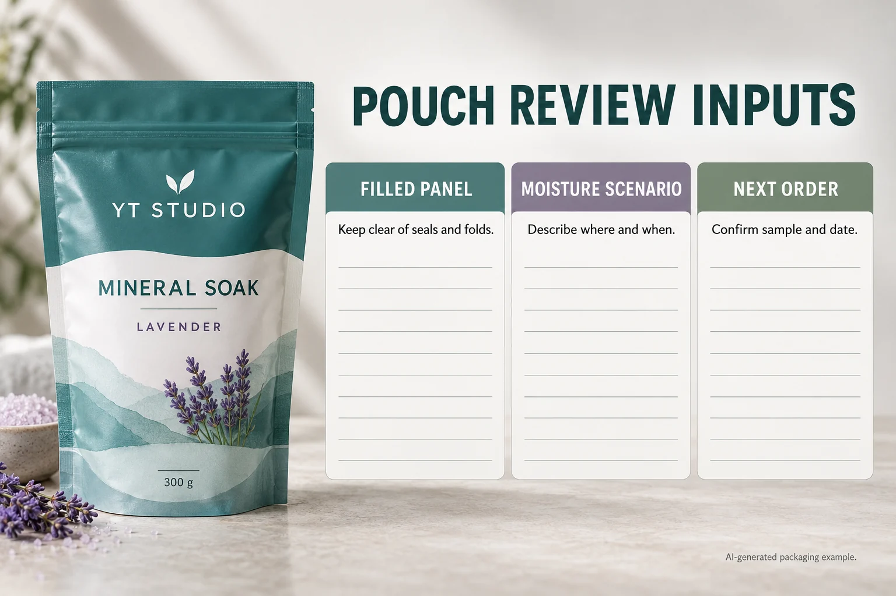

Find the panel that stays visible after filling
Mark the top seal, gussets, zipper or tear zone and the front area that stays flat once the pouch is filled. The proof should be reviewed on a filled sample, because creases change both graphic balance and information visibility.
Use an original visual system for variants
Salt crystal dots, water waves, botanical marks and a restrained soak icon make practical variant cues. They tell the product story without turning the label into a borrowed look. Keep one shared grid while colour differentiates scent or mineral families.
Give the front and back different work
Let the front establish the range and variant; use the back for the detail that needs more room. A pouch becomes more premium when it stops trying to say everything from one angle.
Check adhesive against the pouch film
Flexible pouch surfaces vary in gloss, texture and movement. Film label materials and protective finishes may be considered, but the final construction should be checked against the pouch laminate, filling conditions, salt exposure, storage and application method.
Keep clear windows and labels in balance
If the pouch has a transparent window, it already supplies texture and product proof. Do not bury it under a label. Use the designed panel to guide the eye, then let the visible salts provide the second reason to look closer.
Proof the retail-facing set
Check the pouch standing, grouped with other variants and inside any carton. Supply pouch dimensions, artwork, finish preference and quantity. For another flexible personal-care format, see our refill pouch label guide.
Do not transfer the wax-melt result to a bath-salt pouch
In a public small-maker question, plain matte labels were acceptable on the maker's wax melts but smudged when moisture reached a partner's bath-salt packaging. The first batch was already too close to change. This is a historical individual account, not proof that all paper labels fail or that a particular film will solve the next order.
The useful difference is the use case. A dry presentation pack and a flexible pouch handled near water ask different questions. Record what was observed and where, along with the actual printed construction if known. Avoid naming the cause from appearance alone: the printed face, edge attachment, bag movement and handling conditions need separate observations.
| Input | Record for the actual pack | Do not assume |
|---|---|---|
| Filled panel | Front/back photos at representative fill; zipper, seal, gusset and fold locations | An empty flat-bag layout represents the filled shape |
| Moisture event | Where and when damp hands, splashes or storage moisture are relevant | A broad waterproof description covers every event |
| Sample identity | Pouch-film reference; full label construction; artwork revision | A visual mockup identifies adhesive or protective finish |
| Copy and appearance | Information that must remain readable; marked observations by location | An attached label necessarily retains usable print |
| Quantity and time | Quantity by scent; current batch status; requested in-hand date | A new proposal can rescue stock already packed or shipped |

Turn observations into a next-order choice
First mark where the label can sit without crossing a seal or fold. Collect the pouch-film information from its source and describe the relevant handling event. Ask the pouch and label contacts which representative samples and method can answer the question. Use the construction-comparison guide to retain face, adhesive, printing and finish references together; do not restart with an anonymous sample that merely looks similar.
Record the agreed observations for print, edges and pack movement separately. Compare them against the project's accepted requirements and route unresolved findings to the responsible supplier or packaging contact. If the sample is an empty pouch while the question concerns a filled crease, that evidence leaves a gap. Keep the requirement pending until the relevant representation is reviewed.
A stable pouch with a settled layout may allow a focused review of the proposed printed construction. A new bag film or a changed fill shape may first require another panel check. Neither case justifies a generic extra layer of tape as a validated repair. Do not present an illustrative picture as a water-resistance test.
Separate the current batch from the next confirmed date
List stock already labelled, stock still available to change and the next production requirement separately. The supplier needs the actual stage and destination to discuss timing. A replacement label proposal does not establish that packed stock can be reworked safely or reach an earlier event; the brand must coordinate that decision with its responsible contacts.
For personal-care label printing, prepare filled-pouch photos, film information, label dimensions, quantities by scent, the moisture scenario and requested date. Use the inquiry form to prepare the message, then send photos and artwork through email or WhatsApp. Ask what can be evaluated and scheduled before treating a proposed date as confirmed.
Need bath salt pouch labels?
Prepare filled-pouch photos, film information, dimensions, quantities by scent and requested date. Ask what can be evaluated and scheduled.
Request a Bath Salt Label Quote